SuSiE RSS Diagnostic
Yuxin Zou
2/9/2021
Last updated: 2021-02-16
Checks: 7 0
Knit directory: susierss_diagnostic/
This reproducible R Markdown analysis was created with workflowr (version 1.6.2). The Checks tab describes the reproducibility checks that were applied when the results were created. The Past versions tab lists the development history.
Great! Since the R Markdown file has been committed to the Git repository, you know the exact version of the code that produced these results.
Great job! The global environment was empty. Objects defined in the global environment can affect the analysis in your R Markdown file in unknown ways. For reproduciblity it’s best to always run the code in an empty environment.
The command set.seed(20201222) was run prior to running the code in the R Markdown file. Setting a seed ensures that any results that rely on randomness, e.g. subsampling or permutations, are reproducible.
Great job! Recording the operating system, R version, and package versions is critical for reproducibility.
Nice! There were no cached chunks for this analysis, so you can be confident that you successfully produced the results during this run.
Great job! Using relative paths to the files within your workflowr project makes it easier to run your code on other machines.
Great! You are using Git for version control. Tracking code development and connecting the code version to the results is critical for reproducibility.
The results in this page were generated with repository version 229d19a. See the Past versions tab to see a history of the changes made to the R Markdown and HTML files.
Note that you need to be careful to ensure that all relevant files for the analysis have been committed to Git prior to generating the results (you can use wflow_publish or wflow_git_commit). workflowr only checks the R Markdown file, but you know if there are other scripts or data files that it depends on. Below is the status of the Git repository when the results were generated:
Ignored files:
Ignored: .Rhistory
Ignored: .Rproj.user/
Ignored: output/.DS_Store
Untracked files:
Untracked: output/simulation_null_CLM_post.rds
Note that any generated files, e.g. HTML, png, CSS, etc., are not included in this status report because it is ok for generated content to have uncommitted changes.
These are the previous versions of the repository in which changes were made to the R Markdown (analysis/diagnostic_lr.Rmd) and HTML (docs/diagnostic_lr.html) files. If you’ve configured a remote Git repository (see ?wflow_git_remote), click on the hyperlinks in the table below to view the files as they were in that past version.
| File | Version | Author | Date | Message |
|---|---|---|---|---|
| Rmd | 229d19a | zouyuxin | 2021-02-16 | wflow_publish(“analysis/diagnostic_lr.Rmd”) |
| html | 7bbc5b4 | zouyuxin | 2021-02-10 | Build site. |
| Rmd | 5499180 | zouyuxin | 2021-02-10 | wflow_publish(“analysis/diagnostic_lr.Rmd”) |
| html | 26f8730 | zouyuxin | 2021-02-09 | Build site. |
| Rmd | 72f797c | zouyuxin | 2021-02-09 | wflow_publish(“analysis/diagnostic_lr.Rmd”) |
There are two goals in diagnostic:
Check the consistency between z scores and LD matrix using \(s^2\);
Detect allele switch issue (flipped sign in z score) using conditional distribution.
In diagnostic, we assume the following model, \[ \hat{z} \sim N(Rz, \sigma^2 R + s^2 I), \sigma^2 + s^2 \leq 1. \] Let \(R = U D U^\intercal\) be eigen-decomposition of \(R\), \(D\) has \(p_1\) positive diagonal elements, \(U = [U_1 \ U_2]\), \(U_1\) is a \(p\) by \(p_1\) matrix, \(U_2\) is a \(p\) by \(p_2=p-p_1\) matrix. We transform \(\hat{z}\) into null space of \(R\) by multiplying \(U_2^\intercal\) \[ U_2^T \hat{z} \sim N(0, s^2 I_{p_2}). \] Therefore, the MLE for \(s^2\) using partial data is \(\frac{1}{p_2} \hat{z}^\intercal U_2 U_2^\intercal \hat{z}\). We estimate \(\sigma^2\) by \(1-s^2\).
Under the null, the posterior distribution of \(\hat{z}_j | \hat{z}_{-j}\) is: \[ \hat{z}_j | \hat{z}_{-j} \sim N(-\frac{1}{\Omega_{jj}} \Omega_{j,-j} \hat{z}_{-j},1/\Omega_{jj}), \Omega = (\sigma^2 R + s^2 I)^{-1}. \]
To check whether there is an allele switch issue, we test the hypothesis \(H_0:\) the sign of \(\hat{z}_j\) is correct, vs \(H_1:\) the sign of \(\hat{z}_j\) is flipped. The likelihood ratio is \[ LR = \frac{p(-\hat{z}_j | \hat{z}_{-j})}{p(\hat{z}_j | \hat{z}_{-j})} \]
From the simulation, the standardized differences between observed z score and the conditional mean is longer-tailed than N(0,1). We use a mixture of normals to model the heavier tail empirically. We model the conditional distribution as \[
\hat{z}_j | \hat{z}_{-j} \sim \sum_{k=1}^{K} \pi_k N(-\frac{1}{\Omega_{jj}} \Omega_{j,-j} \hat{z}_{-j},\frac{\sigma_k^2}{\Omega_{jj}}), \Omega = (\sigma^2 R + s^2 I)^{-1}.
\] The \(\sigma_k\) is a fixed dense grid, the minimum value is \(0.8\), the maximum value is \(2\sqrt{max(\text{standardized difference}^2)}\). We estimate \(\pi_k\) using mixsqp. The likelihood ratio test is based on the mixture distribution.
Simulation Setting
In the following simulation, we extract 200 regions from 1000 Genome data using GBR (British in England and Scotland), IBS (Iberian Populations in Spain) and CLM (Colombians in Medellin, Colombia) population. We got 1000 Genome genotypes from ftp://ftp.1000genomes.ebi.ac.uk/vol1/ftp/release/20130502/supporting/hd_genotype_chip, ALL.chip.omni_broad_sanger_combined.20140818.snps.genotypes.vcf.gz. The VCF file is converted to bed format using plink. We removed related samples. There are 103 GBR samples, 150 IBS samples and 107 CLM samples. We generated z scores based on GBR samples and we want to detect the inconsistency between z scores and LD (from GBR, IBS or CLM).
Summary
In summary, a large \(s^2\) indicates that the z scores and LD matrix are mismatched. One mismatch is that the LD matrix is from the reference panel, or another population. The \(s^2\) using LD from CLM is larger than the one using LD from IBS. The other mismatch is that some SNPs have flipped z scores. The flipped z score has larger log likelihood ratio. In Simulation 1.1 (null and no flip), there are SNPs with large log likelihood ratio when the LD matrix is from IBS or CLM. This may be due to the inaccuracy in LD matrix, the conditional distribution depends on the LD matrix.
library(tibble)
library(dplyr)
out = readRDS('data/susierss_diagnostic_query.rds')
out = as_tibble(out)
out_null = out %>% filter(simulate.n_signal == 0, flip_z.flip == FALSE)
out_signal = out %>% filter(simulate.n_signal == 1, flip_z.flip == FALSE)
out_null_flip = out %>% filter(simulate.n_signal == 0,
flip_z.flip == TRUE,
flip_z.flip_pos == 'null')
out_signal_flip_null = out %>% filter(simulate.n_signal == 1,
flip_z.flip == TRUE,
flip_z.flip_pos == 'null')
out_signal_flip_signal = out %>% filter(simulate.n_signal == 1,
flip_z.flip == TRUE,
flip_z.flip_pos == 'signal')out_null_sample = out_null %>% filter(susie_rss.ld_type == 'sample', susie_rss.correct_ld == FALSE)Here is a summary of number of SNPs in each region:
summary(sapply(out_null_sample$diagnostic.res1_simple, function(x) length(x$post$z))) Min. 1st Qu. Median Mean 3rd Qu. Max.
191.0 425.0 497.5 519.8 598.0 1016.0 Simulation 1.1: under null (z = 0)
out_null_sample = out_null %>% filter(susie_rss.ld_type == 'sample', susie_rss.correct_ld == FALSE)
out_null_IBS = out_null %>% filter(susie_rss.ld_type == 'IBS', susie_rss.correct_ld == FALSE)
out_null_CLM = out_null %>% filter(susie_rss.ld_type == 'CLM', susie_rss.correct_ld == FALSE)Check \(s^2\)
We compare the \(s^2\) using different LD matrix. The z scores are calculated using GBR samples.
par(mfrow=c(1,3))
out_null_sample_s2 = apply(out_null_sample, 1, function(x) x$diagnostic.res1_simple$s2)
out_null_IBS_s2 = apply(out_null_IBS, 1, function(x) x$diagnostic.res1_simple$s2)
out_null_CLM_s2 = apply(out_null_CLM, 1, function(x) x$diagnostic.res1_simple$s2)
plot(out_null_sample_s2, out_null_IBS_s2, xlab = 'LD = GBR', ylab='LD = IBS', main='GBR z scores')
abline(0,1)
plot(out_null_sample_s2, out_null_CLM_s2, xlab = 'LD = GBR', ylab='LD = CLM', main='GBR z scores')
abline(0,1)
plot(out_null_IBS_s2, out_null_CLM_s2, xlab = 'LD = IBS', ylab='LD = CLM', main='GBR z scores')
abline(0,1)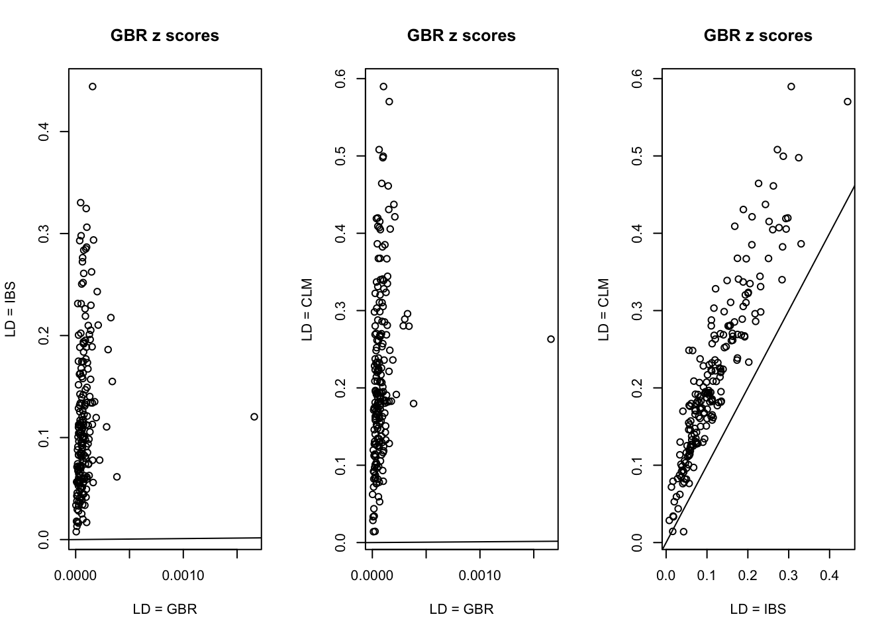
| Version | Author | Date |
|---|---|---|
| 26f8730 | zouyuxin | 2021-02-09 |
The estimated \(s^2\) is larger when the LD matrix is from another sample.
Check conditional mean and Likelihood
z = unlist(lapply(out_null_sample$diagnostic.res1_simple, function(x) x$post$z))
out_null_sample_mean = unlist(lapply(out_null_sample$diagnostic.res1_simple, function(x) x$post$postmean))
out_null_sample_z = unlist(lapply(out_null_sample$diagnostic.res1_simple, function(x) x$post$post_z))
out_null_sample_l0 = unlist(lapply(out_null_sample$diagnostic.res1_simple, function(x) x$post$logl0))
out_null_sample_l1 = unlist(lapply(out_null_sample$diagnostic.res1_simple, function(x) x$post$logl1))
out_null_sample_lr = unlist(lapply(out_null_sample$diagnostic.res1_simple, function(x) x$post$logLR))
out_null_sample_l0mix = unlist(lapply(out_null_sample$diagnostic.res1_simple, function(x) x$post$logl0mix))
out_null_sample_l1mix = unlist(lapply(out_null_sample$diagnostic.res1_simple, function(x) x$post$logl1mix))
out_null_sample_lrmix = unlist(lapply(out_null_sample$diagnostic.res1_simple, function(x) x$post$logLRmix))
out_null_sample_l1mix[is.infinite(out_null_sample_l1mix)] = -1000
out_null_sample_lrmix[is.infinite(out_null_sample_lrmix)] = -1000
out_null_IBS_mean = unlist(lapply(out_null_IBS$diagnostic.res1_simple, function(x) x$post$postmean))
out_null_IBS_z = unlist(lapply(out_null_IBS$diagnostic.res1_simple, function(x) x$post$post_z))
out_null_IBS_l0 = unlist(lapply(out_null_IBS$diagnostic.res1_simple, function(x) x$post$logl0))
out_null_IBS_l1 = unlist(lapply(out_null_IBS$diagnostic.res1_simple, function(x) x$post$logl1))
out_null_IBS_lr = unlist(lapply(out_null_IBS$diagnostic.res1_simple, function(x) x$post$logLR))
out_null_IBS_l0mix = unlist(lapply(out_null_IBS$diagnostic.res1_simple, function(x) x$post$logl0mix))
out_null_IBS_l1mix = unlist(lapply(out_null_IBS$diagnostic.res1_simple, function(x) x$post$logl1mix))
out_null_IBS_lrmix = unlist(lapply(out_null_IBS$diagnostic.res1_simple, function(x) x$post$logLRmix))
out_null_IBS_l1mix[is.infinite(out_null_IBS_l1mix)] = -1000
out_null_IBS_lrmix[is.infinite(out_null_IBS_lrmix)] = -1000
zCLM = unlist(lapply(out_null_CLM$diagnostic.res1_simple, function(x) x$post$z))
out_null_CLM_mean = unlist(lapply(out_null_CLM$diagnostic.res1_simple, function(x) x$post$postmean))
out_null_CLM_var = unlist(lapply(out_null_CLM$diagnostic.res1_simple, function(x) x$post$postvar))
out_null_CLM_z = unlist(lapply(out_null_CLM$diagnostic.res1_simple, function(x) x$post$post_z))
out_null_CLM_l0 = unlist(lapply(out_null_CLM$diagnostic.res1_simple, function(x) x$post$logl0))
out_null_CLM_l1 = unlist(lapply(out_null_CLM$diagnostic.res1_simple, function(x) x$post$logl1))
out_null_CLM_lr = unlist(lapply(out_null_CLM$diagnostic.res1_simple, function(x) x$post$logLR))
out_null_CLM_l0mix = unlist(lapply(out_null_CLM$diagnostic.res1_simple, function(x) x$post$logl0mix))
out_null_CLM_l1mix = unlist(lapply(out_null_CLM$diagnostic.res1_simple, function(x) x$post$logl1mix))
out_null_CLM_lrmix = unlist(lapply(out_null_CLM$diagnostic.res1_simple, function(x) x$post$logLRmix))
out_null_CLM_l1mix[is.infinite(out_null_CLM_l1mix)] = -1000
out_null_CLM_lrmix[is.infinite(out_null_CLM_lrmix)] = -1000par(mfrow=c(3,3))
diff_sample = z-out_null_sample_mean; diff_IBS = z-out_null_IBS_mean; diff_CLM = z-out_null_CLM_mean;
ymax = ceiling(max(c(diff_sample, diff_IBS, diff_CLM))); ymin = floor(min(c(diff_sample, diff_IBS, diff_CLM)))
plot(diff_sample, ylab='LD=GBR', main='z-conditional mean',cex=0.6, ylim = c(ymin, ymax))
plot(diff_IBS, ylab='LD=IBS', ylim = c(ymin, ymax))
plot(diff_CLM, ylab='LD=CLM', ylim = c(ymin, ymax))
ymax = ceiling(max(c(out_null_sample_z, out_null_IBS_z, out_null_CLM_z))); ymin = floor(min(c(out_null_sample_z, out_null_IBS_z, out_null_CLM_z)))
plot(out_null_sample_z, ylab='LD=GBR', main='standardized difference',cex=0.6, ylim = c(ymin, ymax))
plot(out_null_IBS_z, ylab='LD=IBS', ylim = c(ymin, ymax))
plot(out_null_CLM_z, ylab='LD=CLM', ylim = c(ymin, ymax))
qqnorm(out_null_sample_z, main='Standardized Difference LD=GBR')
qqline(out_null_sample_z)
qqnorm(out_null_IBS_z, main='Standardized Difference LD=IBS')
qqline(out_null_IBS_z)
qqnorm(out_null_CLM_z, main='Standardized Difference LD=CLM')
qqline(out_null_CLM_z)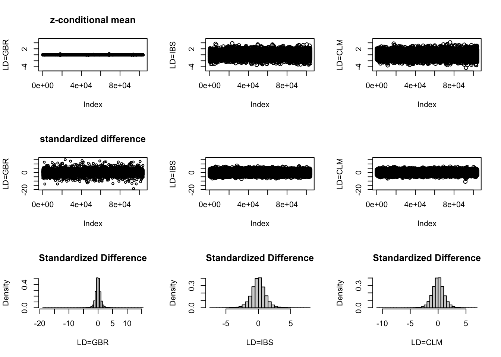
| Version | Author | Date |
|---|---|---|
| 26f8730 | zouyuxin | 2021-02-09 |
par(mfrow=c(2,3))
plot(out_null_sample_l0, out_null_sample_l1, main='LD=GBR', xlab='log likelihood under null', ylab='log likelihood under alternative')
abline(0,1)
plot(out_null_IBS_l0, out_null_IBS_l1, main='LD=IBS', xlab='log likelihood under null', ylab='log likelihood under alternative')
abline(0,1)
plot(out_null_CLM_l0, out_null_CLM_l1, main='LD=CLM', xlab='log likelihood under null', ylab='log likelihood under alternative')
abline(0,1)
plot(out_null_sample_l0mix, out_null_sample_l1mix, main='LD=GBR', xlab='log mix likelihood under null', ylab='log mix likelihood under alternative')
abline(0,1)
plot(out_null_IBS_l0mix, out_null_IBS_l1mix, main='LD=IBS', xlab='log mix likelihood under null', ylab='log mix likelihood under alternative')
abline(0,1)
plot(out_null_CLM_l0mix, out_null_CLM_l1mix, main='LD=CLM', xlab='log mix likelihood under null', ylab='log mix likelihood under alternative')
abline(0,1)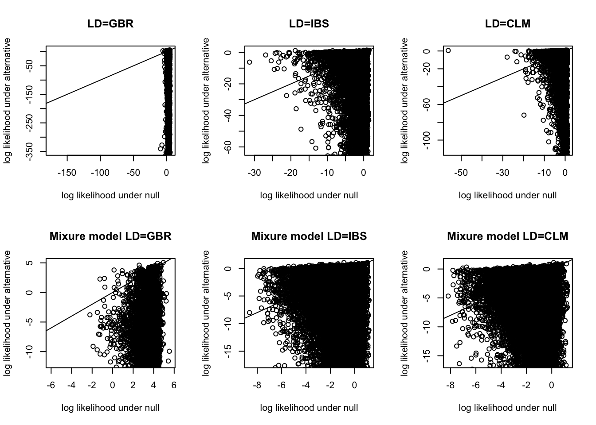
| Version | Author | Date |
|---|---|---|
| 26f8730 | zouyuxin | 2021-02-09 |
Simulation 1.2: under null with one flipped sign
Based on Simulation 1.1, we randomly flipped sign of one z score.
out_null_flip_sample = out_null_flip %>% filter(susie_rss.ld_type == 'sample', susie_rss.correct_ld == FALSE)
out_null_flip_IBS = out_null_flip %>% filter(susie_rss.ld_type == 'IBS', susie_rss.correct_ld == FALSE)
out_null_flip_CLM = out_null_flip %>% filter(susie_rss.ld_type == 'CLM', susie_rss.correct_ld == FALSE)Check \(s^2\)
par(mfrow=c(1,3))
out_null_flip_sample_s2 = apply(out_null_flip_sample, 1, function(x) x$diagnostic.res1_simple$s2)
out_null_flip_IBS_s2 = apply(out_null_flip_IBS, 1, function(x) x$diagnostic.res1_simple$s2)
out_null_flip_CLM_s2 = apply(out_null_flip_CLM, 1, function(x) x$diagnostic.res1_simple$s2)
plot(out_null_flip_sample_s2, out_null_flip_IBS_s2, xlab = 'LD = GBR', ylab='LD = IBS', main='GBR z scores')
abline(0,1)
plot(out_null_flip_sample_s2, out_null_flip_CLM_s2, xlab = 'LD = GBR', ylab='LD = CLM', main='GBR z scores')
abline(0,1)
plot(out_null_flip_IBS_s2, out_null_flip_CLM_s2, xlab = 'LD = IBS', ylab='LD = CLM', main='GBR z scores')
abline(0,1)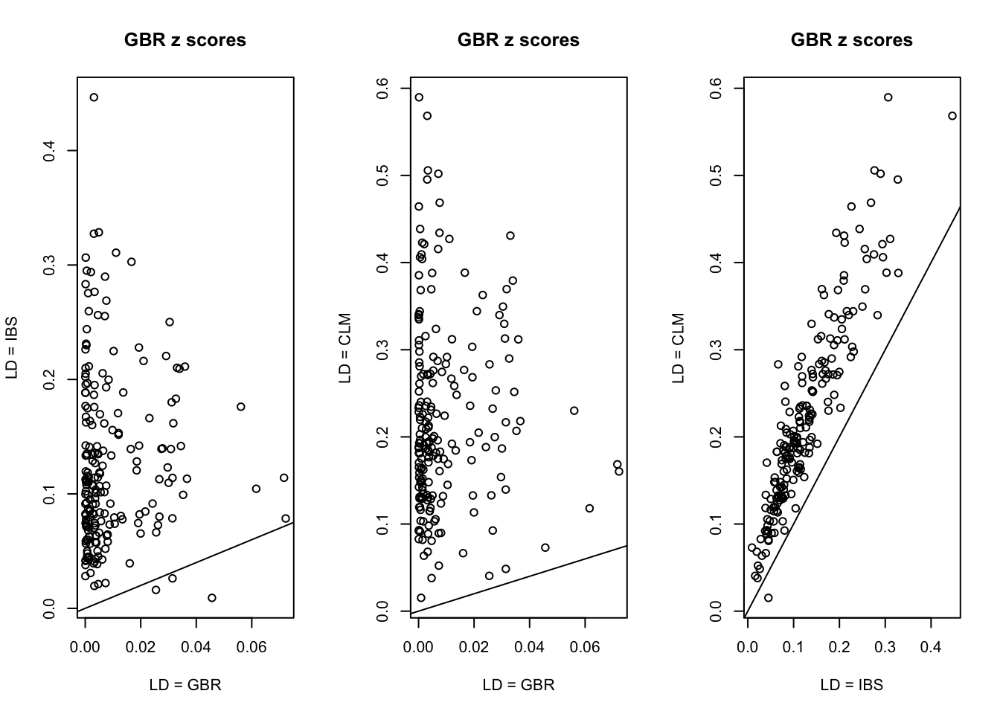
| Version | Author | Date |
|---|---|---|
| 26f8730 | zouyuxin | 2021-02-09 |
Comparing the estimated \(s^2\) with non-flipped sign (Simulation 1.1):
plot(out_null_sample_s2, out_null_flip_sample_s2, xlab='non-flip', ylab='flip', main='GBR s2')
abline(0,1)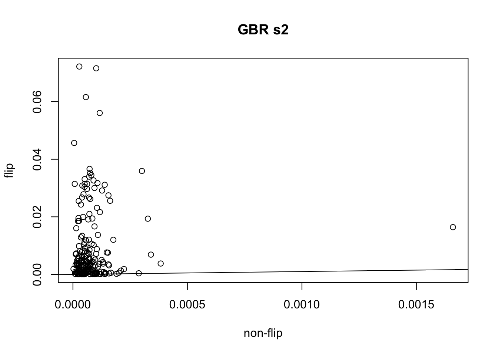
| Version | Author | Date |
|---|---|---|
| 26f8730 | zouyuxin | 2021-02-09 |
Check conditional mean and Likelihood
z_flip = unlist(lapply(out_null_flip_sample$diagnostic.res1_simple, function(x) x$post$z))
out_null_flip_sample_mean = unlist(lapply(out_null_flip_sample$diagnostic.res1_simple, function(x) x$post$postmean))
out_null_flip_sample_z = unlist(lapply(out_null_flip_sample$diagnostic.res1_simple, function(x) x$post$post_z))
out_null_flip_sample_l0 = unlist(lapply(out_null_flip_sample$diagnostic.res1_simple, function(x) x$post$logl0))
out_null_flip_sample_l1 = unlist(lapply(out_null_flip_sample$diagnostic.res1_simple, function(x) x$post$logl1))
out_null_flip_sample_lr = unlist(lapply(out_null_flip_sample$diagnostic.res1_simple, function(x) x$post$logLR))
out_null_flip_sample_l0mix = unlist(lapply(out_null_flip_sample$diagnostic.res1_simple, function(x) x$post$logl0mix))
out_null_flip_sample_l1mix = unlist(lapply(out_null_flip_sample$diagnostic.res1_simple, function(x) x$post$logl1mix))
out_null_flip_sample_lrmix = unlist(lapply(out_null_flip_sample$diagnostic.res1_simple, function(x) x$post$logLRmix))
out_null_flip_sample_l1mix[is.infinite(out_null_flip_sample_l1mix)] = -1000
out_null_flip_sample_lrmix[is.infinite(out_null_flip_sample_lrmix)] = -1000
out_null_flip_IBS_mean = unlist(lapply(out_null_flip_IBS$diagnostic.res1_simple, function(x) x$post$postmean))
out_null_flip_IBS_z = unlist(lapply(out_null_flip_IBS$diagnostic.res1_simple, function(x) x$post$post_z))
out_null_flip_IBS_l0 = unlist(lapply(out_null_flip_IBS$diagnostic.res1_simple, function(x) x$post$logl0))
out_null_flip_IBS_l1 = unlist(lapply(out_null_flip_IBS$diagnostic.res1_simple, function(x) x$post$logl1))
out_null_flip_IBS_lr = unlist(lapply(out_null_flip_IBS$diagnostic.res1_simple, function(x) x$post$logLR))
out_null_flip_IBS_l0mix = unlist(lapply(out_null_flip_IBS$diagnostic.res1_simple, function(x) x$post$logl0mix))
out_null_flip_IBS_l1mix = unlist(lapply(out_null_flip_IBS$diagnostic.res1_simple, function(x) x$post$logl1mix))
out_null_flip_IBS_lrmix = unlist(lapply(out_null_flip_IBS$diagnostic.res1_simple, function(x) x$post$logLRmix))
out_null_flip_CLM_mean = unlist(lapply(out_null_flip_CLM$diagnostic.res1_simple, function(x) x$post$postmean))
out_null_flip_CLM_z = unlist(lapply(out_null_flip_CLM$diagnostic.res1_simple, function(x) x$post$post_z))
out_null_flip_CLM_l0 = unlist(lapply(out_null_flip_CLM$diagnostic.res1_simple, function(x) x$post$logl0))
out_null_flip_CLM_l1 = unlist(lapply(out_null_flip_CLM$diagnostic.res1_simple, function(x) x$post$logl1))
out_null_flip_CLM_lr = unlist(lapply(out_null_flip_CLM$diagnostic.res1_simple, function(x) x$post$logLR))
out_null_flip_CLM_l0mix = unlist(lapply(out_null_flip_CLM$diagnostic.res1_simple, function(x) x$post$logl0mix))
out_null_flip_CLM_l1mix = unlist(lapply(out_null_flip_CLM$diagnostic.res1_simple, function(x) x$post$logl1mix))
out_null_flip_CLM_lrmix = unlist(lapply(out_null_flip_CLM$diagnostic.res1_simple, function(x) x$post$logLRmix))The red points corresponding to z scores with flipped sign. Using in-sample LD matrix (GBR), there are some flipped z scores with small standardized differences between observed z scores and conditional mean. This is because the flipped observed z score is very small in magnitude.
par(mfrow=c(3,3))
idx = which(z != z_flip)
diff_sample = z_flip-out_null_flip_sample_mean; diff_IBS = z_flip-out_null_flip_IBS_mean; diff_CLM = z_flip-out_null_flip_CLM_mean;
ymax = ceiling(max(c(diff_sample, diff_IBS, diff_CLM))); ymin = floor(min(c(diff_sample, diff_IBS, diff_CLM)))
plot(diff_sample, ylab='LD=GBR', main='z-conditional mean',cex=0.6, ylim = c(ymin, ymax))
points(idx, diff_sample[idx], col='red', pch=16)
plot(diff_IBS, ylab='LD=IBS', ylim = c(ymin, ymax))
points(idx, diff_IBS[idx], col='red', pch=16)
plot(diff_CLM, ylab='LD=CLM', ylim = c(ymin, ymax))
points(idx, diff_CLM[idx], col='red', pch=16)
ymax = ceiling(max(c(out_null_flip_sample_z, out_null_flip_IBS_z, out_null_flip_CLM_z))); ymin = floor(min(c(out_null_flip_sample_z, out_null_flip_IBS_z, out_null_flip_CLM_z)))
plot(out_null_flip_sample_z, ylab='LD=GBR', main='standardized difference',cex=0.6, ylim = c(ymin, ymax))
points(idx, out_null_flip_sample_z[idx], col='red', pch=16)
plot(out_null_flip_IBS_z, ylab='LD=IBS', ylim = c(ymin, ymax))
points(idx, out_null_flip_IBS_z[idx], col='red', pch=16)
plot(out_null_flip_CLM_z, ylab='LD=CLM', ylim = c(ymin, ymax))
points(idx, out_null_flip_CLM_z[idx], col='red', pch=16)
qqnorm(out_null_flip_sample_z, ylab='Standardized Difference LD=GBR')
qqline(out_null_flip_sample_z)
qqnorm(out_null_flip_IBS_z, ylab='Standardized Difference LD=IBS')
qqline(out_null_flip_IBS_z)
qqnorm(out_null_flip_CLM_z, ylab='Standardized Difference LD=CLM')
qqline(out_null_flip_CLM_z)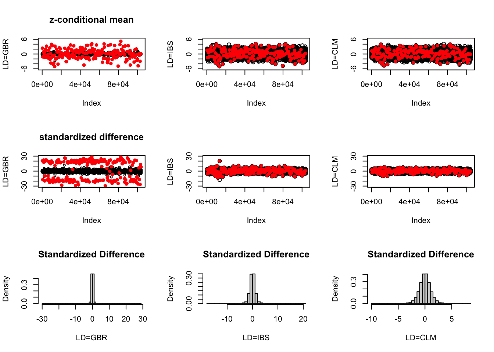
| Version | Author | Date |
|---|---|---|
| 26f8730 | zouyuxin | 2021-02-09 |
par(mfrow=c(2,3))
plot(out_null_flip_sample_l0, out_null_flip_sample_l1, main='LD=GBR', xlab='log likelihood under null', ylab='log likelihood under alternative')
points(out_null_flip_sample_l0[idx], out_null_flip_sample_l1[idx], col='red', pch=16)
abline(0,1)
plot(out_null_flip_IBS_l0, out_null_flip_IBS_l1, main='LD=IBS', xlab='log likelihood under null', ylab='log likelihood under alternative')
points(out_null_flip_IBS_l0[idx], out_null_flip_IBS_l1[idx], col='red', pch=16)
abline(0,1)
plot(out_null_flip_CLM_l0, out_null_flip_CLM_l1, main='LD=CLM', xlab='log likelihood under null', ylab='log likelihood under alternative')
points(out_null_flip_CLM_l0[idx], out_null_flip_CLM_l1[idx], col='red', pch=16)
abline(0,1)
plot(out_null_flip_sample_l0mix, out_null_flip_sample_l1mix, main='LD=GBR', xlab='log mix likelihood under null', ylab='log mix likelihood under alternative')
points(out_null_flip_sample_l0mix[idx], out_null_flip_sample_l1mix[idx], col='red', pch=16)
abline(0,1)
plot(out_null_flip_IBS_l0mix, out_null_flip_IBS_l1mix, main='LD=IBS', xlab='log mix likelihood under null', ylab='log mix likelihood under alternative')
points(out_null_flip_IBS_l0mix[idx], out_null_flip_IBS_l1mix[idx], col='red', pch=16)
abline(0,1)
plot(out_null_flip_CLM_l0mix, out_null_flip_CLM_l1mix, main='LD=CLM', xlab='log mix likelihood under null', ylab='log mix likelihood under alternative')
points(out_null_flip_CLM_l0mix[idx], out_null_flip_CLM_l1mix[idx], col='red', pch=16)
abline(0,1)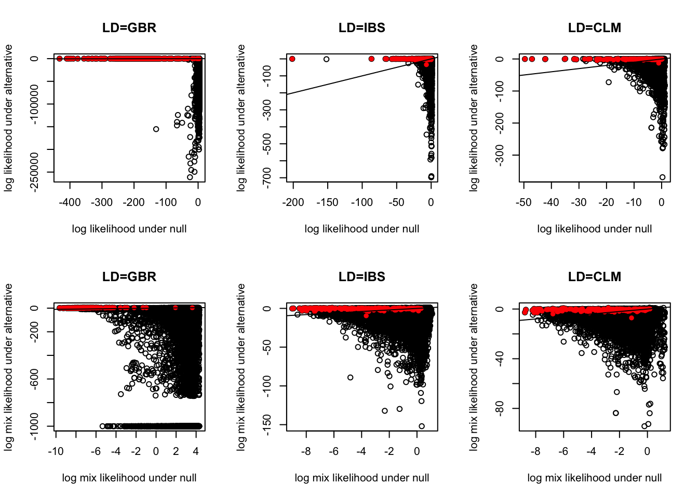
| Version | Author | Date |
|---|---|---|
| 26f8730 | zouyuxin | 2021-02-09 |
Comparing standardized difference from Simulation 1.1 and 1.2,
par(mfrow=c(1,3))
plot(out_null_sample_z, out_null_flip_sample_z,
xlab='standardized difference from Simu1.1',
ylab='standardized difference from Simu1.2', main='LD=GBR')
points(out_null_sample_z[idx], out_null_flip_sample_z[idx], col='red', pch=16)
abline(0,1)
plot(out_null_IBS_z, out_null_flip_IBS_z,
xlab='standardized difference from Simu1.1',
ylab='standardized difference from Simu1.2', main='LD=IBS')
points(out_null_IBS_z[idx], out_null_flip_IBS_z[idx], col='red', pch=16)
abline(0,1)
plot(out_null_CLM_z, out_null_flip_CLM_z,
xlab='standardized difference from Simu1.1',
ylab='standardized difference from Simu1.2', main='LD=CLM')
points(out_null_CLM_z[idx], out_null_flip_CLM_z[idx], col='red', pch=16)
abline(0,1)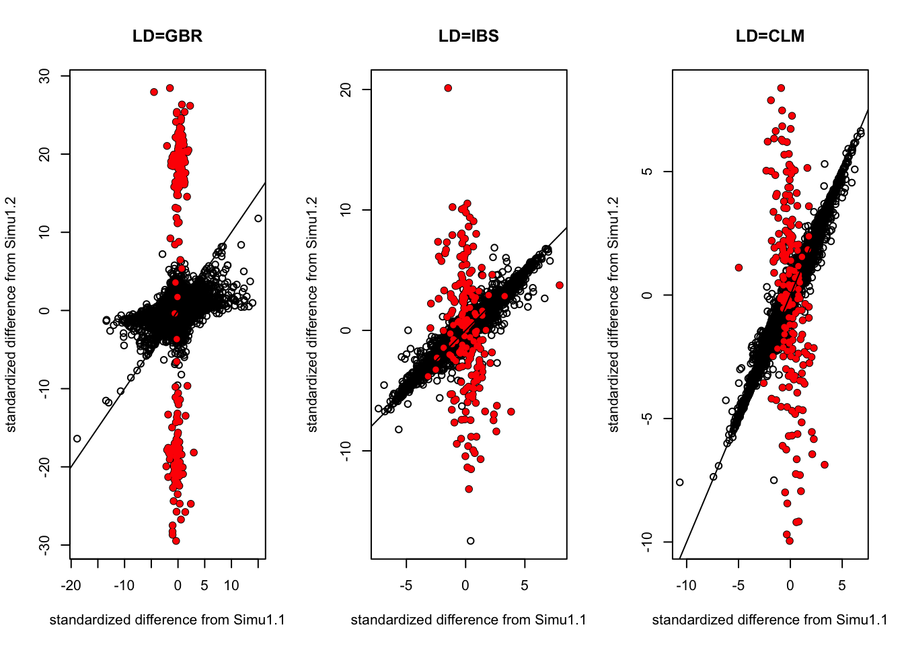
| Version | Author | Date |
|---|---|---|
| 26f8730 | zouyuxin | 2021-02-09 |
Comparing LR from Simulation 1.1 and 1.2,
par(mfrow=c(2,3))
plot(out_null_sample_lr, out_null_flip_sample_lr, ylim=c(-3000,500),
xlab='logLR from Simu1.1',
ylab='logLR from Simu1.2', main='LD=GBR')
points(out_null_sample_lr[idx], out_null_flip_sample_lr[idx], col='red', pch=16)
abline(0,1)
abline(h=0,v=0,lty=4)
plot(out_null_IBS_lr, out_null_flip_IBS_lr,
xlab='logLR from Simu1.1',
ylab='logLR from Simu1.2', main='LD=IBS')
points(out_null_IBS_lr[idx], out_null_flip_IBS_lr[idx], col='red', pch=16)
abline(0,1)
abline(h=0,v=0,lty=4)
plot(out_null_CLM_lr, out_null_flip_CLM_lr,
xlab='logLR from Simu1.1',
ylab='logLR from Simu1.2', main='LD=CLM')
points(out_null_CLM_lr[idx], out_null_flip_CLM_lr[idx], col='red', pch=16)
abline(0,1)
abline(h=0,v=0,lty=4)
plot(out_null_sample_lrmix, out_null_flip_sample_lrmix,
xlab='logLRmix from Simu1.1',
ylab='logLRmix from Simu1.2', main='LD=GBR')
points(out_null_sample_lrmix[idx], out_null_flip_sample_lrmix[idx], col='red', pch=16)
abline(0,1)
abline(h=0,v=0,lty=4)
plot(out_null_IBS_lrmix, out_null_flip_IBS_lrmix,
xlab='logLRmix from Simu1.1',
ylab='logLRmix from Simu1.2', main='LD=IBS')
points(out_null_IBS_lrmix[idx], out_null_flip_IBS_lrmix[idx], col='red', pch=16)
abline(0,1)
abline(h=0,v=0,lty=4)
plot(out_null_CLM_lrmix, out_null_flip_CLM_lrmix,
xlab='logLRmix from Simu1.1',
ylab='logLRmix from Simu1.2', main='LD=CLM')
points(out_null_CLM_lrmix[idx], out_null_flip_CLM_lrmix[idx], col='red', pch=16)
abline(0,1)
abline(h=0,v=0,lty=4)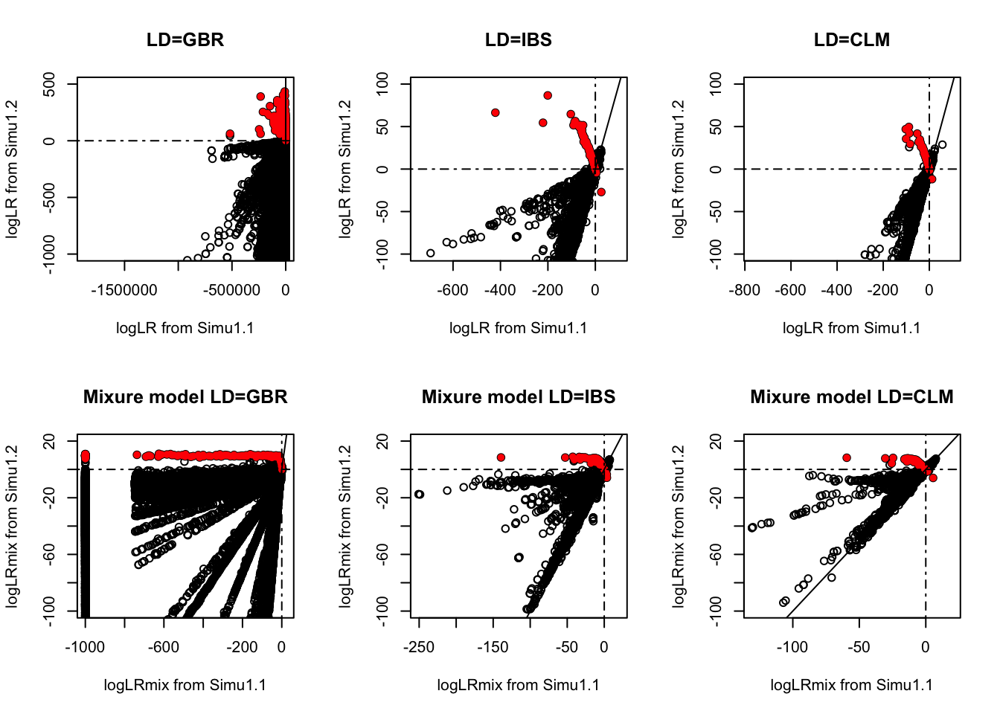
| Version | Author | Date |
|---|---|---|
| 26f8730 | zouyuxin | 2021-02-09 |
Simulation 2.1: one signal
There is one signal in this simulation. The PVE is 0.1.
out_sample = out_signal %>% filter(susie_rss.ld_type == 'sample', susie_rss.correct_ld == FALSE)
out_IBS = out_signal %>% filter(susie_rss.ld_type == 'IBS', susie_rss.correct_ld == FALSE)
out_CLM = out_signal %>% filter(susie_rss.ld_type == 'CLM', susie_rss.correct_ld == FALSE)Check \(s^2\)
par(mfrow=c(1,3))
out_sample_s2 = apply(out_sample, 1, function(x) x$diagnostic.res1_simple$s2)
out_IBS_s2 = apply(out_IBS, 1, function(x) x$diagnostic.res1_simple$s2)
out_CLM_s2 = apply(out_CLM, 1, function(x) x$diagnostic.res1_simple$s2)
plot(out_sample_s2, out_IBS_s2, xlab = 'LD = GBR', ylab='LD = IBS', main='GBR z scores')
abline(0,1)
plot(out_sample_s2, out_CLM_s2, xlab = 'LD = GBR', ylab='LD = CLM', main='GBR z scores')
abline(0,1)
plot(out_IBS_s2, out_CLM_s2, xlab = 'LD = IBS', ylab='LD = CLM', main='GBR z scores')
abline(0,1)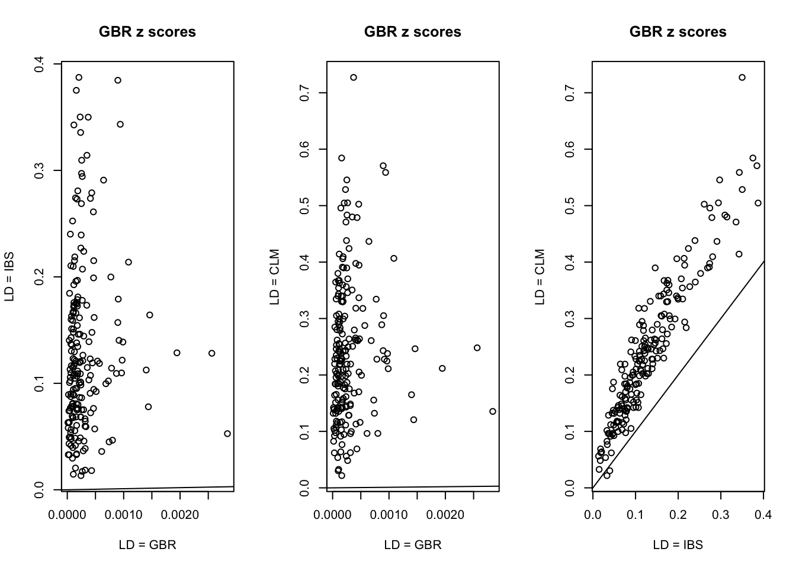
| Version | Author | Date |
|---|---|---|
| 26f8730 | zouyuxin | 2021-02-09 |
Check conditional mean and Likelihood
z = unlist(lapply(out_sample$diagnostic.res1_simple, function(x) x$post$z))
out_sample_mean = unlist(lapply(out_sample$diagnostic.res1_simple, function(x) x$post$postmean))
out_sample_z = unlist(lapply(out_sample$diagnostic.res1_simple, function(x) x$post$post_z))
out_sample_l0 = unlist(lapply(out_sample$diagnostic.res1_simple, function(x) x$post$logl0))
out_sample_l1 = unlist(lapply(out_sample$diagnostic.res1_simple, function(x) x$post$logl1))
out_sample_lr = unlist(lapply(out_sample$diagnostic.res1_simple, function(x) x$post$logLR))
out_sample_l0mix = unlist(lapply(out_sample$diagnostic.res1_simple, function(x) x$post$logl0mix))
out_sample_l1mix = unlist(lapply(out_sample$diagnostic.res1_simple, function(x) x$post$logl1mix))
out_sample_lrmix = unlist(lapply(out_sample$diagnostic.res1_simple, function(x) x$post$logLRmix))
out_sample_l1mix[is.infinite(out_sample_l1mix)] = -1000
out_sample_lrmix[is.infinite(out_sample_lrmix)] = -1000
out_IBS_mean = unlist(lapply(out_IBS$diagnostic.res1_simple, function(x) x$post$postmean))
out_IBS_z = unlist(lapply(out_IBS$diagnostic.res1_simple, function(x) x$post$post_z))
out_IBS_l0 = unlist(lapply(out_IBS$diagnostic.res1_simple, function(x) x$post$logl0))
out_IBS_l1 = unlist(lapply(out_IBS$diagnostic.res1_simple, function(x) x$post$logl1))
out_IBS_lr = unlist(lapply(out_IBS$diagnostic.res1_simple, function(x) x$post$logLR))
out_IBS_l0mix = unlist(lapply(out_IBS$diagnostic.res1_simple, function(x) x$post$logl0mix))
out_IBS_l1mix = unlist(lapply(out_IBS$diagnostic.res1_simple, function(x) x$post$logl1mix))
out_IBS_lrmix = unlist(lapply(out_IBS$diagnostic.res1_simple, function(x) x$post$logLRmix))
out_CLM_mean = unlist(lapply(out_CLM$diagnostic.res1_simple, function(x) x$post$postmean))
out_CLM_z = unlist(lapply(out_CLM$diagnostic.res1_simple, function(x) x$post$post_z))
out_CLM_l0 = unlist(lapply(out_CLM$diagnostic.res1_simple, function(x) x$post$logl0))
out_CLM_l1 = unlist(lapply(out_CLM$diagnostic.res1_simple, function(x) x$post$logl1))
out_CLM_lr = unlist(lapply(out_CLM$diagnostic.res1_simple, function(x) x$post$logLR))
out_CLM_l0mix = unlist(lapply(out_CLM$diagnostic.res1_simple, function(x) x$post$logl0mix))
out_CLM_l1mix = unlist(lapply(out_CLM$diagnostic.res1_simple, function(x) x$post$logl1mix))
out_CLM_lrmix = unlist(lapply(out_CLM$diagnostic.res1_simple, function(x) x$post$logLRmix))par(mfrow=c(3,3))
diff_sample = z-out_sample_mean; diff_IBS = z-out_IBS_mean; diff_CLM = z-out_CLM_mean;
ymax = ceiling(max(c(diff_sample, diff_IBS, diff_CLM))); ymin = floor(min(c(diff_sample, diff_IBS, diff_CLM)))
plot(diff_sample, ylab='LD=GBR', main='z-conditional mean',cex=0.6, ylim = c(ymin, ymax))
plot(diff_IBS, ylab='LD=IBS', ylim = c(ymin, ymax))
plot(diff_CLM, ylab='LD=CLM', ylim = c(ymin, ymax))
ymax = ceiling(max(c(out_sample_z, out_IBS_z, out_CLM_z))); ymin = floor(min(c(out_sample_z, out_IBS_z, out_CLM_z)))
plot(out_sample_z, ylab='LD=GBR', main='standardized difference',cex=0.6, ylim = c(ymin, ymax))
plot(out_IBS_z, ylab='LD=IBS', ylim = c(ymin, ymax))
plot(out_CLM_z, ylab='LD=CLM', ylim = c(ymin, ymax))
qqnorm(out_sample_z, ylab='Standardized Difference LD=GBR')
qqline(out_sample_z)
qqnorm(out_IBS_z, ylab='Standardized Difference LD=IBS')
qqline(out_IBS_z)
qqnorm(out_CLM_z, ylab='Standardized Difference LD=CLM')
qqline(out_CLM_z)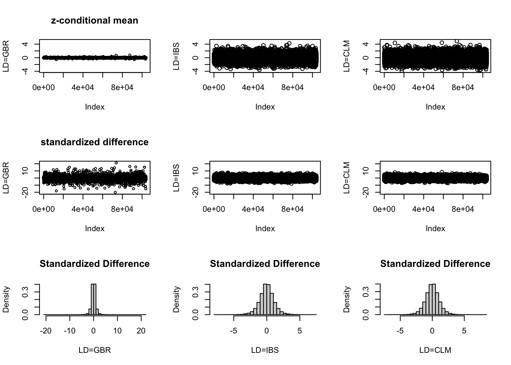
| Version | Author | Date |
|---|---|---|
| 26f8730 | zouyuxin | 2021-02-09 |
par(mfrow=c(2,3))
plot(out_sample_l0, out_sample_l1, main='LD=GBR', xlab='log likelihood under null', ylab='log likelihood under alternative')
abline(0,1)
plot(out_IBS_l0, out_IBS_l1, main='LD=IBS', xlab='log likelihood under null', ylab='log likelihood under alternative')
abline(0,1)
plot(out_CLM_l0, out_CLM_l1, main='LD=CLM', xlab='log likelihood under null', ylab='log likelihood under alternative')
abline(0,1)
plot(out_sample_l0mix, out_sample_l1mix, main='LD=GBR', xlab='log mix likelihood under null', ylab='log mix likelihood under alternative')
abline(0,1)
plot(out_IBS_l0mix, out_IBS_l1mix, main='LD=IBS', xlab='log mix likelihood under null', ylab='log mix likelihood under alternative')
abline(0,1)
plot(out_CLM_l0mix, out_CLM_l1mix, main='LD=CLM', xlab='log mix likelihood under null', ylab='log mix likelihood under alternative')
abline(0,1)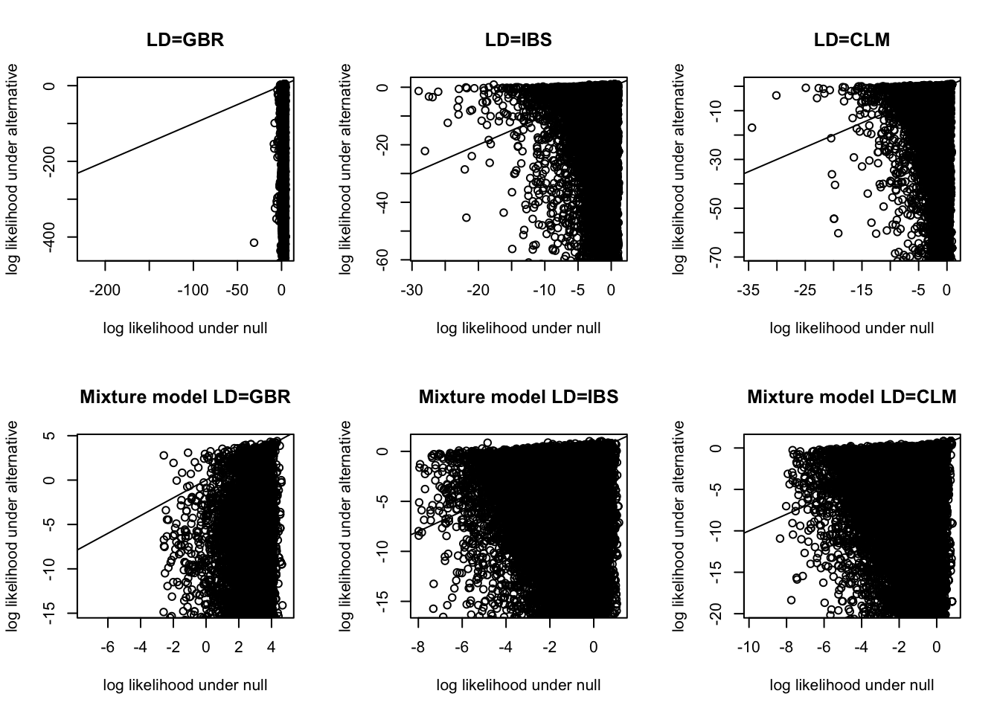
| Version | Author | Date |
|---|---|---|
| 26f8730 | zouyuxin | 2021-02-09 |
Simulation 2.2: flipped sign at signal
Based on simulation 2.1, we flipped sign of signal.
out_flip_sample = out_signal_flip_signal %>% filter(susie_rss.ld_type == 'sample', susie_rss.correct_ld == FALSE)
out_flip_IBS = out_signal_flip_signal %>% filter(susie_rss.ld_type == 'IBS', susie_rss.correct_ld == FALSE)
out_flip_CLM = out_signal_flip_signal %>% filter(susie_rss.ld_type == 'CLM', susie_rss.correct_ld == FALSE)Check \(s^2\)
par(mfrow=c(1,3))
out_flip_sample_s2 = apply(out_flip_sample, 1, function(x) x$diagnostic.res1_simple$s2)
out_flip_IBS_s2 = apply(out_flip_IBS, 1, function(x) x$diagnostic.res1_simple$s2)
out_flip_CLM_s2 = apply(out_flip_CLM, 1, function(x) x$diagnostic.res1_simple$s2)
plot(out_flip_sample_s2, out_flip_IBS_s2, xlab = 'LD = GBR', ylab='LD = IBS', main='GBR z scores')
abline(0,1)
plot(out_flip_sample_s2, out_flip_CLM_s2, xlab = 'LD = GBR', ylab='LD = CLM', main='GBR z scores')
abline(0,1)
plot(out_flip_IBS_s2, out_flip_CLM_s2, xlab = 'LD = IBS', ylab='LD = CLM', main='GBR z scores')
abline(0,1)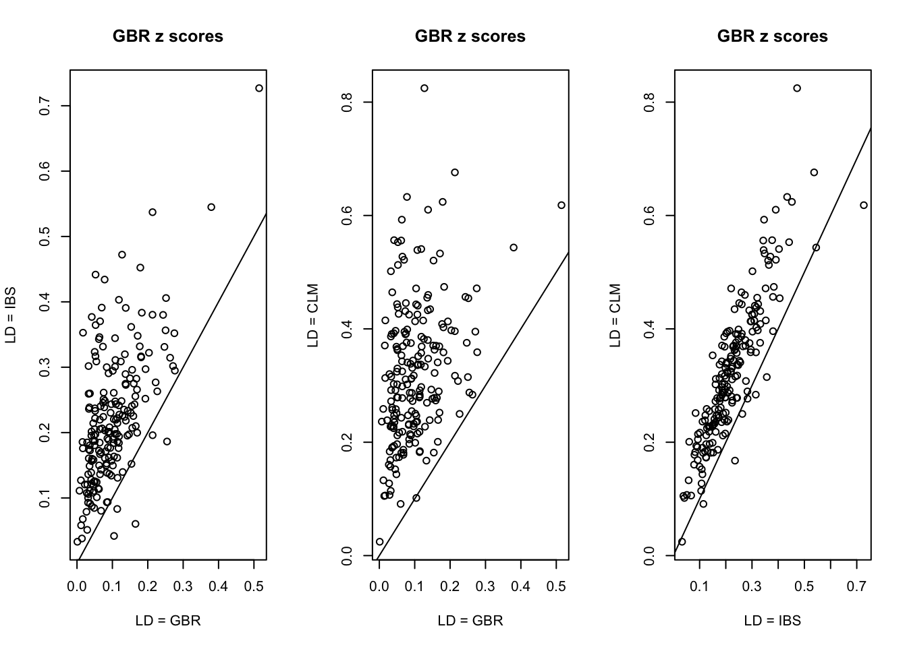
| Version | Author | Date |
|---|---|---|
| 26f8730 | zouyuxin | 2021-02-09 |
Check conditional mean and Likelihood
z_flip = unlist(lapply(out_flip_sample$diagnostic.res1_simple, function(x) x$post$z))
out_flip_sample_mean = unlist(lapply(out_flip_sample$diagnostic.res1_simple, function(x) x$post$postmean))
out_flip_sample_z = unlist(lapply(out_flip_sample$diagnostic.res1_simple, function(x) x$post$post_z))
out_flip_sample_l0 = unlist(lapply(out_flip_sample$diagnostic.res1_simple, function(x) x$post$logl0))
out_flip_sample_l1 = unlist(lapply(out_flip_sample$diagnostic.res1_simple, function(x) x$post$logl1))
out_flip_sample_lr = unlist(lapply(out_flip_sample$diagnostic.res1_simple, function(x) x$post$logLR))
out_flip_sample_l0mix = unlist(lapply(out_flip_sample$diagnostic.res1_simple, function(x) x$post$logl0mix))
out_flip_sample_l1mix = unlist(lapply(out_flip_sample$diagnostic.res1_simple, function(x) x$post$logl1mix))
out_flip_sample_lrmix = unlist(lapply(out_flip_sample$diagnostic.res1_simple, function(x) x$post$logLRmix))
out_flip_IBS_mean = unlist(lapply(out_flip_IBS$diagnostic.res1_simple, function(x) x$post$postmean))
out_flip_IBS_z = unlist(lapply(out_flip_IBS$diagnostic.res1_simple, function(x) x$post$post_z))
out_flip_IBS_l0 = unlist(lapply(out_flip_IBS$diagnostic.res1_simple, function(x) x$post$logl0))
out_flip_IBS_l1 = unlist(lapply(out_flip_IBS$diagnostic.res1_simple, function(x) x$post$logl1))
out_flip_IBS_lr = unlist(lapply(out_flip_IBS$diagnostic.res1_simple, function(x) x$post$logLR))
out_flip_IBS_l0mix = unlist(lapply(out_flip_IBS$diagnostic.res1_simple, function(x) x$post$logl0mix))
out_flip_IBS_l1mix = unlist(lapply(out_flip_IBS$diagnostic.res1_simple, function(x) x$post$logl1mix))
out_flip_IBS_lrmix = unlist(lapply(out_flip_IBS$diagnostic.res1_simple, function(x) x$post$logLRmix))
out_flip_CLM_mean = unlist(lapply(out_flip_CLM$diagnostic.res1_simple, function(x) x$post$postmean))
out_flip_CLM_z = unlist(lapply(out_flip_CLM$diagnostic.res1_simple, function(x) x$post$post_z))
out_flip_CLM_l0 = unlist(lapply(out_flip_CLM$diagnostic.res1_simple, function(x) x$post$logl0))
out_flip_CLM_l1 = unlist(lapply(out_flip_CLM$diagnostic.res1_simple, function(x) x$post$logl1))
out_flip_CLM_lr = unlist(lapply(out_flip_CLM$diagnostic.res1_simple, function(x) x$post$logLR))
out_flip_CLM_l0mix = unlist(lapply(out_flip_CLM$diagnostic.res1_simple, function(x) x$post$logl0mix))
out_flip_CLM_l1mix = unlist(lapply(out_flip_CLM$diagnostic.res1_simple, function(x) x$post$logl1mix))
out_flip_CLM_lrmix = unlist(lapply(out_flip_CLM$diagnostic.res1_simple, function(x) x$post$logLRmix))par(mfrow=c(3,3))
idx = which(z != z_flip)
diff_sample = z_flip-out_flip_sample_mean; diff_IBS = z_flip-out_flip_IBS_mean; diff_CLM = z_flip-out_flip_CLM_mean;
ymax = ceiling(max(c(diff_sample, diff_IBS, diff_CLM))); ymin = floor(min(c(diff_sample, diff_IBS, diff_CLM)))
plot(diff_sample, ylab='LD=GBR', main='z-conditional mean',cex=0.6, ylim = c(ymin, ymax))
points(idx, diff_sample[idx], col='red', pch=16)
plot(diff_IBS, ylab='LD=IBS', ylim = c(ymin, ymax))
points(idx, diff_IBS[idx], col='red', pch=16)
plot(diff_CLM, ylab='LD=CLM', ylim = c(ymin, ymax))
points(idx, diff_CLM[idx], col='red', pch=16)
ymax = ceiling(max(c(out_flip_sample_z, out_flip_IBS_z, out_flip_CLM_z))); ymin = floor(min(c(out_flip_sample_z, out_flip_IBS_z, out_flip_CLM_z)))
plot(out_flip_sample_z, ylab='LD=GBR', main='standardized difference',cex=0.6, ylim = c(ymin, ymax))
points(idx, out_flip_sample_z[idx], col='red', pch=16)
plot(out_flip_IBS_z, ylab='LD=IBS', ylim = c(ymin, ymax))
points(idx, out_flip_IBS_z[idx], col='red', pch=16)
plot(out_flip_CLM_z, ylab='LD=CLM', ylim = c(ymin, ymax))
points(idx, out_flip_CLM_z[idx], col='red', pch=16)
qqnorm(out_flip_sample_z, ylab='Standardized Difference LD=GBR')
qqline(out_flip_sample_z)
qqnorm(out_flip_IBS_z, ylab='Standardized Difference LD=IBS')
qqline(out_flip_IBS_z)
qqnorm(out_flip_CLM_z, ylab='Standardized Difference LD=CLM')
qqline(out_flip_CLM_z)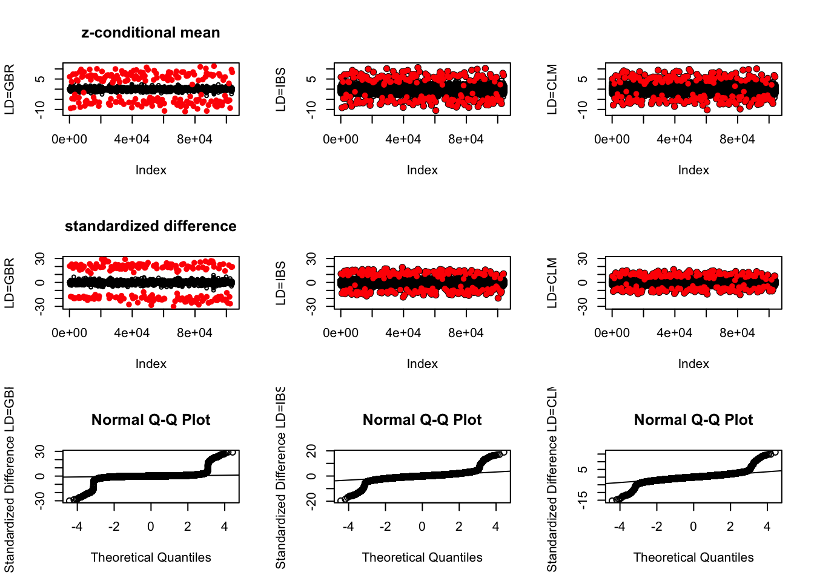
| Version | Author | Date |
|---|---|---|
| 26f8730 | zouyuxin | 2021-02-09 |
par(mfrow=c(2,3))
plot(out_flip_sample_l0, out_flip_sample_l1, main='LD=GBR', xlab='log likelihood under null', ylab='log likelihood under alternative')
points(out_flip_sample_l0[idx], out_flip_sample_l1[idx], col='red', pch=16)
abline(0,1)
plot(out_flip_IBS_l0, out_flip_IBS_l1, main='LD=IBS', xlab='log likelihood under null', ylab='log likelihood under alternative')
points(out_flip_IBS_l0[idx], out_flip_IBS_l1[idx], col='red', pch=16)
abline(0,1)
plot(out_flip_CLM_l0, out_flip_CLM_l1, main='LD=CLM', xlab='log likelihood under null', ylab='log likelihood under alternative')
points(out_flip_CLM_l0[idx], out_flip_CLM_l1[idx], col='red', pch=16)
abline(0,1)
plot(out_flip_sample_l0mix, out_flip_sample_l1mix, main='LD=GBR', xlab='log mix likelihood under null', ylab='log mix likelihood under alternative')
points(out_flip_sample_l0mix[idx], out_flip_sample_l1mix[idx], col='red', pch=16)
abline(0,1)
plot(out_flip_IBS_l0mix, out_flip_IBS_l1mix, main='LD=IBS', xlab='log mix likelihood under null', ylab='log mix likelihood under alternative')
points(out_flip_IBS_l0mix[idx], out_flip_IBS_l1mix[idx], col='red', pch=16)
abline(0,1)
plot(out_flip_CLM_l0mix, out_flip_CLM_l1mix, main='LD=CLM', xlab='log mix likelihood under null', ylab='log mix likelihood under alternative')
points(out_flip_CLM_l0mix[idx], out_flip_CLM_l1mix[idx], col='red', pch=16)
abline(0,1)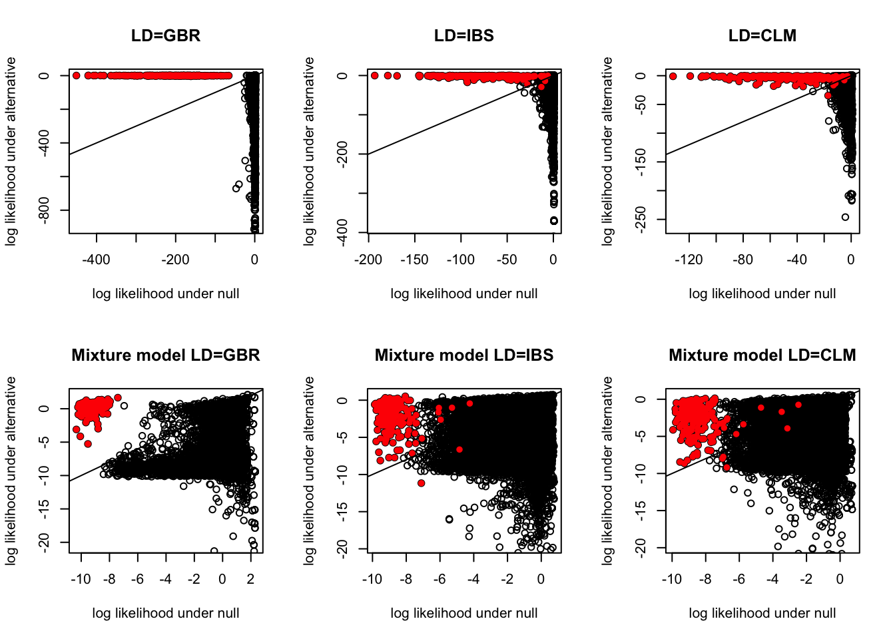
| Version | Author | Date |
|---|---|---|
| 26f8730 | zouyuxin | 2021-02-09 |
Comparing standardized difference from Simulation 2.1 and 2.2,
par(mfrow=c(1,3))
plot(out_sample_z, out_flip_sample_z,
xlab='standardized difference from Simu2.1',
ylab='standardized difference from Simu2.2', main='LD=GBR')
points(out_sample_z[idx], out_flip_sample_z[idx], col='red', pch=16)
abline(0,1)
plot(out_IBS_z, out_flip_IBS_z,
xlab='standardized difference from Simu2.1',
ylab='standardized difference from Simu2.2', main='LD=IBS')
points(out_IBS_z[idx], out_flip_IBS_z[idx], col='red', pch=16)
abline(0,1)
plot(out_CLM_z, out_flip_CLM_z,
xlab='standardized difference from Simu2.1',
ylab='standardized difference from Simu2.2', main='LD=CLM')
points(out_CLM_z[idx], out_flip_CLM_z[idx], col='red', pch=16)
abline(0,1)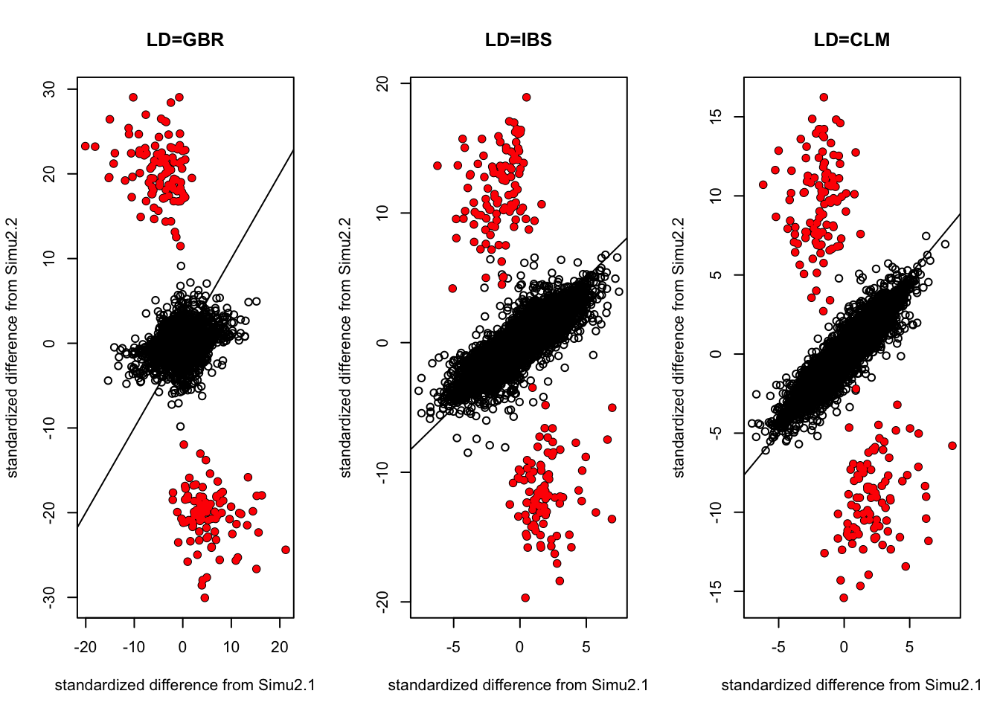
| Version | Author | Date |
|---|---|---|
| 26f8730 | zouyuxin | 2021-02-09 |
Comparing LR from Simulation 2.1 and 2.2,
par(mfrow=c(2,3))
plot(out_sample_lr, out_flip_sample_lr, ylim=c(-3000,500),
xlab='logLR from Simu2.1',
ylab='logLR from Simu2.2', main='LD=GBR')
points(out_sample_lr[idx], out_flip_sample_lr[idx], col='red', pch=16)
abline(0,1)
abline(h=0, v=0, lty=4)
plot(out_IBS_lr, out_flip_IBS_lr,
xlab='logLR from Simu2.1',
ylab='logLR from Simu2.2', main='LD=IBS')
points(out_IBS_lr[idx], out_flip_IBS_lr[idx], col='red', pch=16)
abline(0,1)
abline(h=0, v=0, lty=4)
plot(out_CLM_lr, out_flip_CLM_lr,
xlab='logLR from Simu2.1',
ylab='logLR from Simu2.2', main='LD=CLM')
points(out_CLM_lr[idx], out_flip_CLM_lr[idx], col='red', pch=16)
abline(0,1)
abline(h=0, v=0, lty=4)
plot(out_sample_lrmix, out_flip_sample_lrmix,
xlab='logLRmix from Simu2.1',
ylab='logLRmix from Simu2.2', main='LD=GBR')
points(out_sample_lrmix[idx], out_flip_sample_lrmix[idx], col='red', pch=16)
abline(0,1)
abline(h=0, v=0, lty=4)
plot(out_IBS_lrmix, out_flip_IBS_lrmix,
xlab='logLRmix from Simu2.1',
ylab='logLRmix from Simu2.2', main='LD=IBS')
points(out_IBS_lrmix[idx], out_flip_IBS_lrmix[idx], col='red', pch=16)
abline(0,1)
abline(h=0, v=0, lty=4)
plot(out_CLM_lrmix, out_flip_CLM_lrmix,
xlab='logLRmix from Simu2.1',
ylab='logLRmix from Simu2.2', main='LD=CLM')
points(out_CLM_lrmix[idx], out_flip_CLM_lrmix[idx], col='red', pch=16)
abline(0,1)
abline(h=0, v=0, lty=4)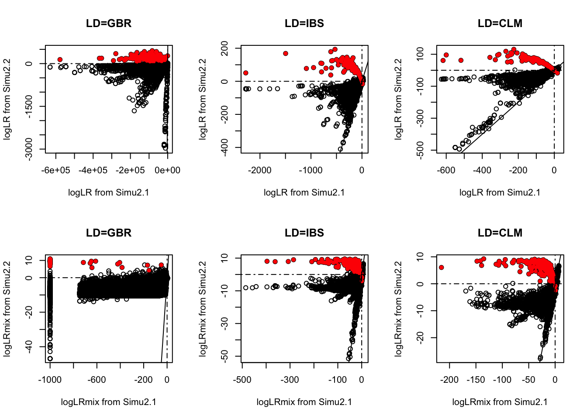
| Version | Author | Date |
|---|---|---|
| 26f8730 | zouyuxin | 2021-02-09 |
Simulation 2.3: flipped sign at null
Based on Simulation 2.1, we randomly flipped sign of one non-signal z score.
out_flip_null_sample = out_signal_flip_null %>% filter(susie_rss.ld_type == 'sample', susie_rss.correct_ld == FALSE)
out_flip_null_IBS = out_signal_flip_null %>% filter(susie_rss.ld_type == 'IBS', susie_rss.correct_ld == FALSE)
out_flip_null_CLM = out_signal_flip_null %>% filter(susie_rss.ld_type == 'CLM', susie_rss.correct_ld == FALSE)Check \(s^2\)
par(mfrow=c(1,3))
out_flip_null_sample_s2 = apply(out_flip_null_sample, 1, function(x) x$diagnostic.res1_simple$s2)
out_flip_null_IBS_s2 = apply(out_flip_null_IBS, 1, function(x) x$diagnostic.res1_simple$s2)
out_flip_null_CLM_s2 = apply(out_flip_null_CLM, 1, function(x) x$diagnostic.res1_simple$s2)
plot(out_flip_null_sample_s2, out_flip_null_IBS_s2, xlab = 'LD = GBR', ylab='LD = IBS', main='GBR z scores')
abline(0,1)
plot(out_flip_null_sample_s2, out_flip_null_CLM_s2, xlab = 'LD = GBR', ylab='LD = CLM', main='GBR z scores')
abline(0,1)
plot(out_flip_null_IBS_s2, out_flip_null_CLM_s2, xlab = 'LD = IBS', ylab='LD = CLM', main='GBR z scores')
abline(0,1)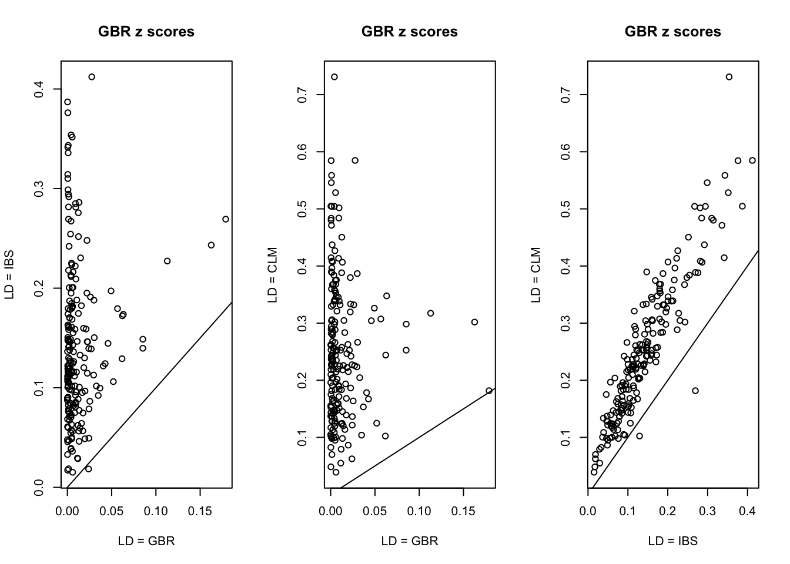
| Version | Author | Date |
|---|---|---|
| 26f8730 | zouyuxin | 2021-02-09 |
Check conditional mean and Likelihood
z_flip = unlist(lapply(out_flip_null_sample$diagnostic.res1_simple, function(x) x$post$z))
out_flip_null_sample_mean = unlist(lapply(out_flip_null_sample$diagnostic.res1_simple, function(x) x$post$postmean))
out_flip_null_sample_z = unlist(lapply(out_flip_null_sample$diagnostic.res1_simple, function(x) x$post$post_z))
out_flip_null_sample_l0 = unlist(lapply(out_flip_null_sample$diagnostic.res1_simple, function(x) x$post$logl0))
out_flip_null_sample_l1 = unlist(lapply(out_flip_null_sample$diagnostic.res1_simple, function(x) x$post$logl1))
out_flip_null_sample_lr = unlist(lapply(out_flip_null_sample$diagnostic.res1_simple, function(x) x$post$logLR))
out_flip_null_sample_l0mix = unlist(lapply(out_flip_null_sample$diagnostic.res1_simple, function(x) x$post$logl0mix))
out_flip_null_sample_l1mix = unlist(lapply(out_flip_null_sample$diagnostic.res1_simple, function(x) x$post$logl1mix))
out_flip_null_sample_lrmix = unlist(lapply(out_flip_null_sample$diagnostic.res1_simple, function(x) x$post$logLRmix))
out_flip_null_sample_l1mix[is.infinite(out_flip_null_sample_l1mix)] = -1000
out_flip_null_sample_lrmix[is.infinite(out_flip_null_sample_lrmix)] = -1000
out_flip_null_IBS_mean = unlist(lapply(out_flip_null_IBS$diagnostic.res1_simple, function(x) x$post$postmean))
out_flip_null_IBS_z = unlist(lapply(out_flip_null_IBS$diagnostic.res1_simple, function(x) x$post$post_z))
out_flip_null_IBS_l0 = unlist(lapply(out_flip_null_IBS$diagnostic.res1_simple, function(x) x$post$logl0))
out_flip_null_IBS_l1 = unlist(lapply(out_flip_null_IBS$diagnostic.res1_simple, function(x) x$post$logl1))
out_flip_null_IBS_lr = unlist(lapply(out_flip_null_IBS$diagnostic.res1_simple, function(x) x$post$logLR))
out_flip_null_IBS_l0mix = unlist(lapply(out_flip_null_IBS$diagnostic.res1_simple, function(x) x$post$logl0mix))
out_flip_null_IBS_l1mix = unlist(lapply(out_flip_null_IBS$diagnostic.res1_simple, function(x) x$post$logl1mix))
out_flip_null_IBS_lrmix = unlist(lapply(out_flip_null_IBS$diagnostic.res1_simple, function(x) x$post$logLRmix))
out_flip_null_CLM_mean = unlist(lapply(out_flip_null_CLM$diagnostic.res1_simple, function(x) x$post$postmean))
out_flip_null_CLM_z = unlist(lapply(out_flip_null_CLM$diagnostic.res1_simple, function(x) x$post$post_z))
out_flip_null_CLM_l0 = unlist(lapply(out_flip_null_CLM$diagnostic.res1_simple, function(x) x$post$logl0))
out_flip_null_CLM_l1 = unlist(lapply(out_flip_null_CLM$diagnostic.res1_simple, function(x) x$post$logl1))
out_flip_null_CLM_lr = unlist(lapply(out_flip_null_CLM$diagnostic.res1_simple, function(x) x$post$logLR))
out_flip_null_CLM_l0mix = unlist(lapply(out_flip_null_CLM$diagnostic.res1_simple, function(x) x$post$logl0mix))
out_flip_null_CLM_l1mix = unlist(lapply(out_flip_null_CLM$diagnostic.res1_simple, function(x) x$post$logl1mix))
out_flip_null_CLM_lrmix = unlist(lapply(out_flip_null_CLM$diagnostic.res1_simple, function(x) x$post$logLRmix))par(mfrow=c(3,3))
idx = which(z != z_flip)
diff_sample = z_flip-out_flip_null_sample_mean; diff_IBS = z_flip-out_flip_null_IBS_mean; diff_CLM = z_flip-out_flip_null_CLM_mean;
ymax = ceiling(max(c(diff_sample, diff_IBS, diff_CLM))); ymin = floor(min(c(diff_sample, diff_IBS, diff_CLM)))
plot(diff_sample, ylab='LD=GBR', main='z-conditional mean',cex=0.6, ylim = c(ymin, ymax))
points(idx, diff_sample[idx], col='red', pch=16)
plot(diff_IBS, ylab='LD=IBS', ylim = c(ymin, ymax))
points(idx, diff_IBS[idx], col='red', pch=16)
plot(diff_CLM, ylab='LD=CLM', ylim = c(ymin, ymax))
points(idx, diff_CLM[idx], col='red', pch=16)
ymax = ceiling(max(c(out_flip_null_sample_z, out_flip_null_IBS_z, out_flip_null_CLM_z))); ymin = floor(min(c(out_flip_null_sample_z, out_flip_null_IBS_z, out_flip_null_CLM_z)))
plot(out_flip_null_sample_z, ylab='LD=GBR', main='standardized difference',cex=0.6, ylim = c(ymin, ymax))
points(idx, out_flip_null_sample_z[idx], col='red', pch=16)
plot(out_flip_null_IBS_z, ylab='LD=IBS', ylim = c(ymin, ymax))
points(idx, out_flip_null_IBS_z[idx], col='red', pch=16)
plot(out_flip_null_CLM_z, ylab='LD=CLM', ylim = c(ymin, ymax))
points(idx, out_flip_null_CLM_z[idx], col='red', pch=16)
qqnorm(out_flip_null_sample_z, xlab='Standardized Difference LD=GBR')
qqline(out_flip_null_sample_z)
qqnorm(out_flip_null_IBS_z, xlab='Standardized Difference LD=IBS')
qqline(out_flip_null_IBS_z)
qqnorm(out_flip_null_CLM_z, xlab='Standardized Difference LD=CLM')
qqline(out_flip_null_CLM_z)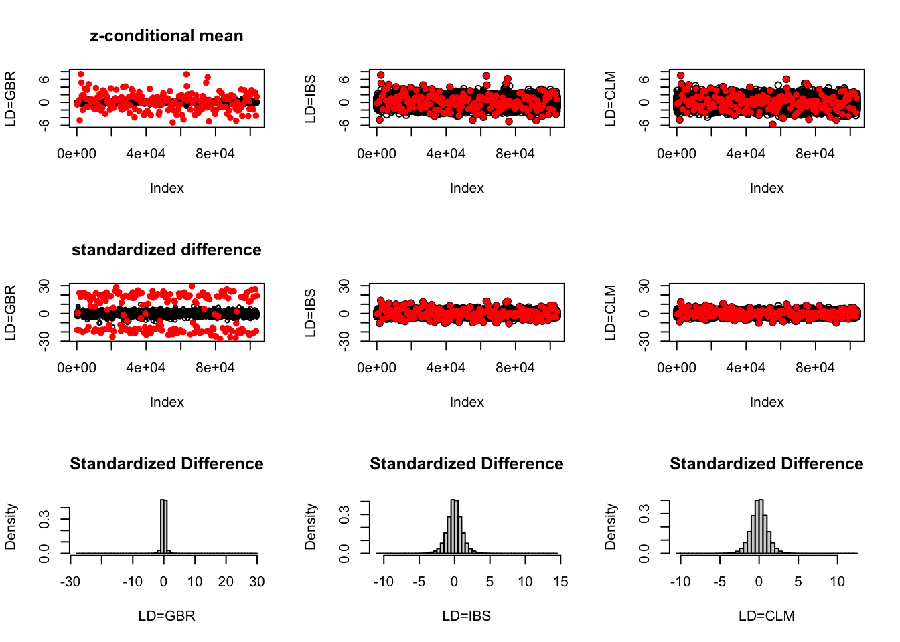
| Version | Author | Date |
|---|---|---|
| 26f8730 | zouyuxin | 2021-02-09 |
par(mfrow=c(2,3))
plot(out_flip_null_sample_l0, out_flip_null_sample_l1, main='LD=GBR', xlab='log likelihood under null', ylab='log likelihood under alternative')
points(out_flip_null_sample_l0[idx], out_flip_null_sample_l1[idx], col='red', pch=16)
abline(0,1)
plot(out_flip_null_IBS_l0, out_flip_null_IBS_l1, main='LD=IBS', xlab='log likelihood under null', ylab='log likelihood under alternative')
points(out_flip_null_IBS_l0[idx], out_flip_null_IBS_l1[idx], col='red', pch=16)
abline(0,1)
plot(out_flip_null_CLM_l0, out_flip_null_CLM_l1, main='LD=CLM', xlab='log likelihood under null', ylab='log likelihood under alternative')
points(out_flip_null_CLM_l0[idx], out_flip_null_CLM_l1[idx], col='red', pch=16)
abline(0,1)
plot(out_flip_null_sample_l0mix, out_flip_null_sample_l1mix, main='LD=GBR', xlab='log mix likelihood under null', ylab='log mix likelihood under alternative')
points(out_flip_null_sample_l0mix[idx], out_flip_null_sample_l1mix[idx], col='red', pch=16)
abline(0,1)
plot(out_flip_null_IBS_l0mix, out_flip_null_IBS_l1mix, main='LD=IBS', xlab='log mix likelihood under null', ylab='log mix likelihood under alternative')
points(out_flip_null_IBS_l0mix[idx], out_flip_null_IBS_l1mix[idx], col='red', pch=16)
abline(0,1)
plot(out_flip_null_CLM_l0mix, out_flip_null_CLM_l1mix, main='LD=CLM', xlab='log mix likelihood under null', ylab='log mix likelihood under alternative')
points(out_flip_null_CLM_l0mix[idx], out_flip_null_CLM_l1mix[idx], col='red', pch=16)
abline(0,1)
| Version | Author | Date |
|---|---|---|
| 26f8730 | zouyuxin | 2021-02-09 |
Comparing standardized difference from Simulation 2.1 and 2.3,
par(mfrow=c(1,3))
plot(out_sample_z, out_flip_null_sample_z,
xlab='standardized difference from Simu2.1',
ylab='standardized difference from Simu2.3', main='LD=GBR')
points(out_sample_z[idx], out_flip_null_sample_z[idx], col='red', pch=16)
abline(0,1)
plot(out_IBS_z, out_flip_null_IBS_z,
xlab='standardized difference from Simu2.1',
ylab='standardized difference from Simu2.3', main='LD=IBS')
points(out_IBS_z[idx], out_flip_null_IBS_z[idx], col='red', pch=16)
abline(0,1)
plot(out_CLM_z, out_flip_null_CLM_z,
xlab='standardized difference from Simu2.1',
ylab='standardized difference from Simu2.3', main='LD=CLM')
points(out_CLM_z[idx], out_flip_null_CLM_z[idx], col='red', pch=16)
abline(0,1)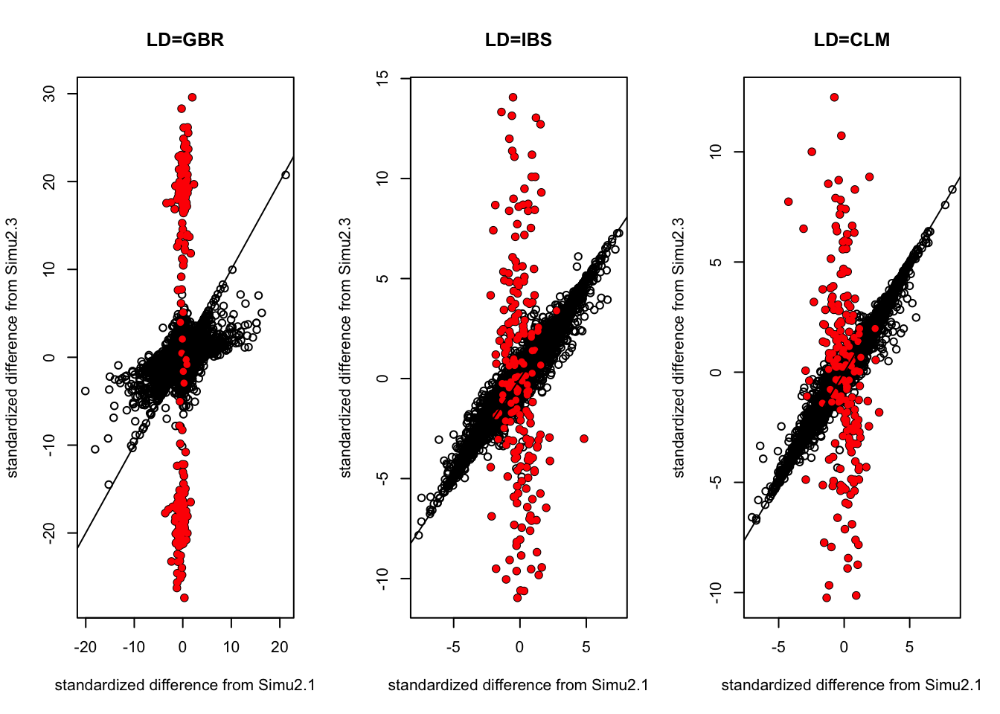
| Version | Author | Date |
|---|---|---|
| 26f8730 | zouyuxin | 2021-02-09 |
Comparing LR from Simulation 2.1 and 2.3,
par(mfrow=c(2,3))
plot(out_sample_lr, out_flip_null_sample_lr, ylim=c(-3000,500),
xlab='logLR from Simu2.1',
ylab='logLR from Simu2.3', main='LD=GBR')
points(out_sample_lr[idx], out_flip_null_sample_lr[idx], col='red', pch=16)
abline(0,1)
abline(h=0,v=0,lty=4)
plot(out_IBS_lr, out_flip_null_IBS_lr,
xlab='logLR from Simu2.1',
ylab='logLR from Simu2.3', main='LD=IBS')
points(out_IBS_lr[idx], out_flip_null_IBS_lr[idx], col='red', pch=16)
abline(0,1)
abline(h=0,v=0,lty=4)
plot(out_CLM_lr, out_flip_null_CLM_lr,
xlab='logLR from Simu2.1',
ylab='logLR from Simu2.3', main='LD=CLM')
points(out_CLM_lr[idx], out_flip_null_CLM_lr[idx], col='red', pch=16)
abline(0,1)
abline(h=0,v=0,lty=4)
plot(out_sample_lrmix, out_flip_null_sample_lrmix,
xlab='logLRmix from Simu2.1',
ylab='logLRmix from Simu2.3', main='LD=GBR')
points(out_sample_lrmix[idx], out_flip_null_sample_lrmix[idx], col='red', pch=16)
abline(0,1)
abline(h=0,v=0,lty=4)
plot(out_IBS_lrmix, out_flip_null_IBS_lrmix,
xlab='logLRmix from Simu2.1',
ylab='logLRmix from Simu2.3', main='LD=IBS')
points(out_IBS_lrmix[idx], out_flip_null_IBS_lrmix[idx], col='red', pch=16)
abline(0,1)
abline(h=0,v=0,lty=4)
plot(out_CLM_lrmix, out_flip_null_CLM_lrmix,
xlab='logLRmix from Simu2.1',
ylab='logLRmix from Simu2.3', main='LD=CLM')
points(out_CLM_lrmix[idx], out_flip_null_CLM_lrmix[idx], col='red', pch=16)
abline(0,1)
abline(h=0,v=0,lty=4)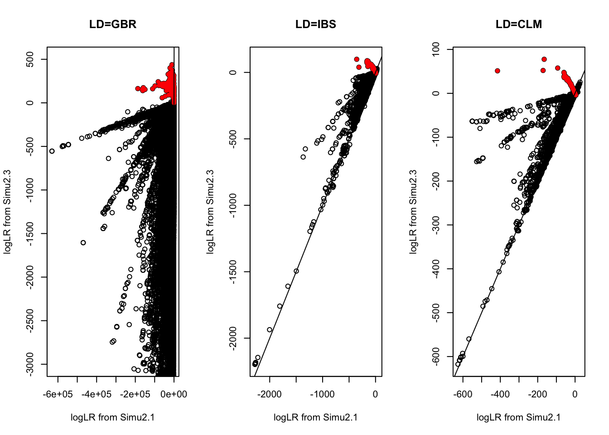
| Version | Author | Date |
|---|---|---|
| 26f8730 | zouyuxin | 2021-02-09 |
sessionInfo()R version 4.0.3 (2020-10-10)
Platform: x86_64-apple-darwin17.0 (64-bit)
Running under: macOS Big Sur 10.16
Matrix products: default
BLAS: /Library/Frameworks/R.framework/Versions/4.0/Resources/lib/libRblas.dylib
LAPACK: /Library/Frameworks/R.framework/Versions/4.0/Resources/lib/libRlapack.dylib
locale:
[1] en_US.UTF-8/en_US.UTF-8/en_US.UTF-8/C/en_US.UTF-8/en_US.UTF-8
attached base packages:
[1] stats graphics grDevices utils datasets methods base
other attached packages:
[1] dplyr_1.0.2 tibble_3.0.6 workflowr_1.6.2
loaded via a namespace (and not attached):
[1] Rcpp_1.0.6 whisker_0.4 knitr_1.30 magrittr_2.0.1
[5] tidyselect_1.1.0 R6_2.5.0 rlang_0.4.10 stringr_1.4.0
[9] tools_4.0.3 xfun_0.19 git2r_0.27.1 htmltools_0.5.0
[13] ellipsis_0.3.1 yaml_2.2.1 digest_0.6.27 rprojroot_2.0.2
[17] lifecycle_0.2.0 crayon_1.4.1 purrr_0.3.4 later_1.1.0.1
[21] vctrs_0.3.6 promises_1.1.1 fs_1.5.0 glue_1.4.2
[25] evaluate_0.14 rmarkdown_2.5 stringi_1.5.3 compiler_4.0.3
[29] pillar_1.4.7 generics_0.1.0 httpuv_1.5.4 pkgconfig_2.0.3